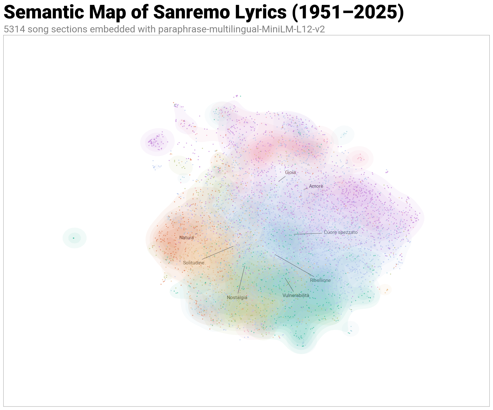
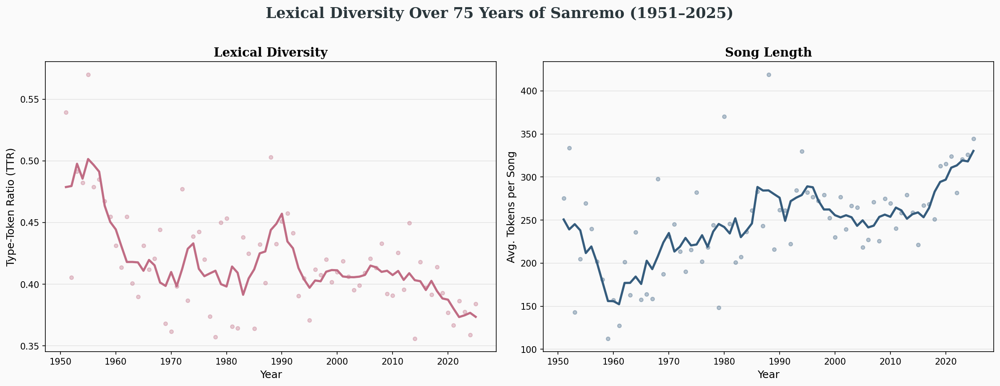

Sanremo Data Visions
Un'esplorazione tra testi, emozioni e intelligenza artificiale.
Il Progetto
Abbiamo analizzato la storia del Festival attraverso i dati. Dalla raccolta automatizzata dei testi alla sentiment analysis, ecco cosa dicono le canzoni di Sanremo.
L'evoluzione del sentimento
Il trend della parola "Amore" e dei temi sentimentali nelle decadi.

Mappatura Semantica
Una visione d'insieme delle relazioni tra i significati dei testi analizzati.

Diversità Lessicale
Come è cambiata la ricchezza del vocabolario dei brani nel corso degli anni.
